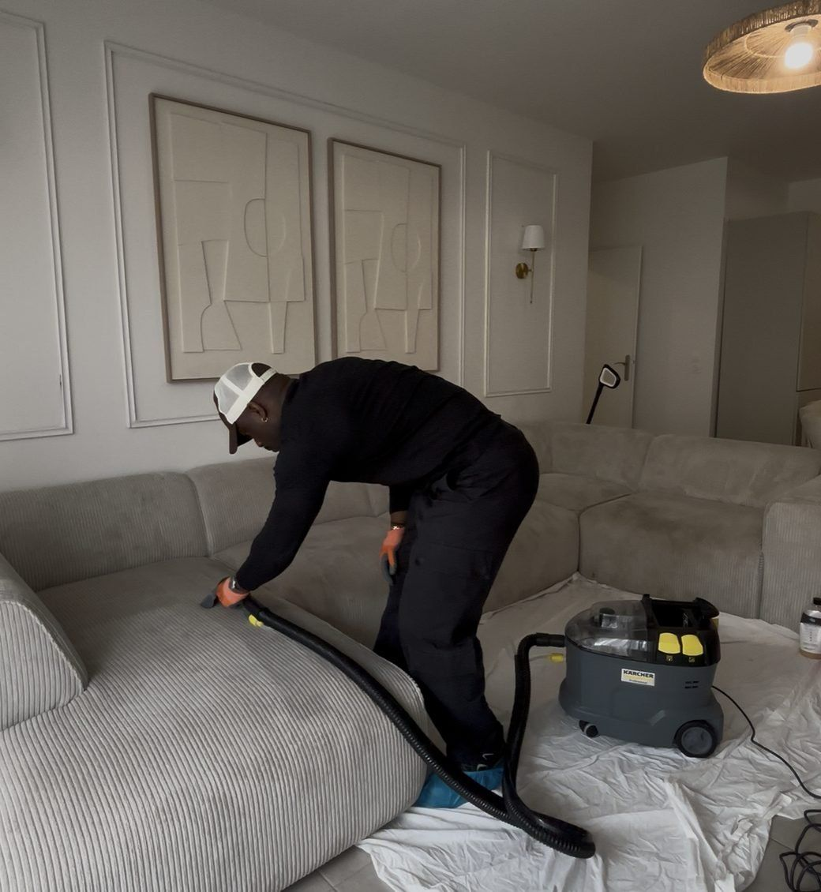
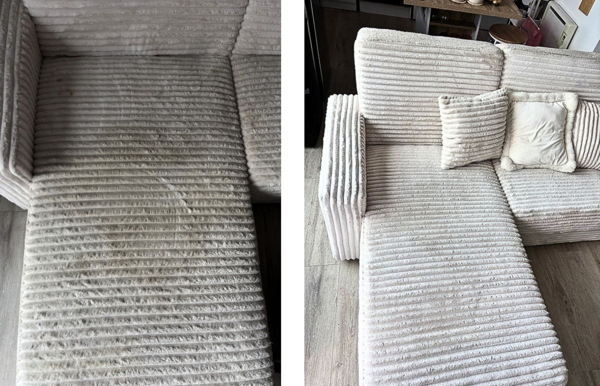
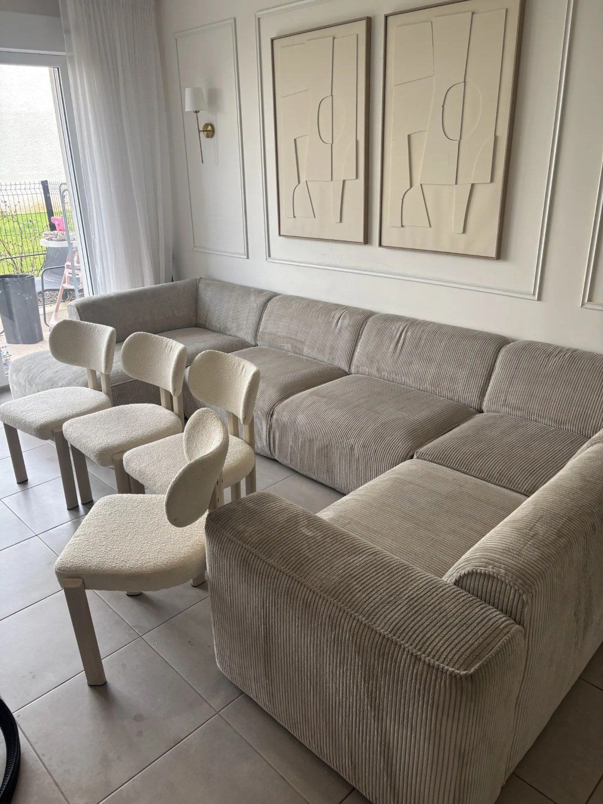
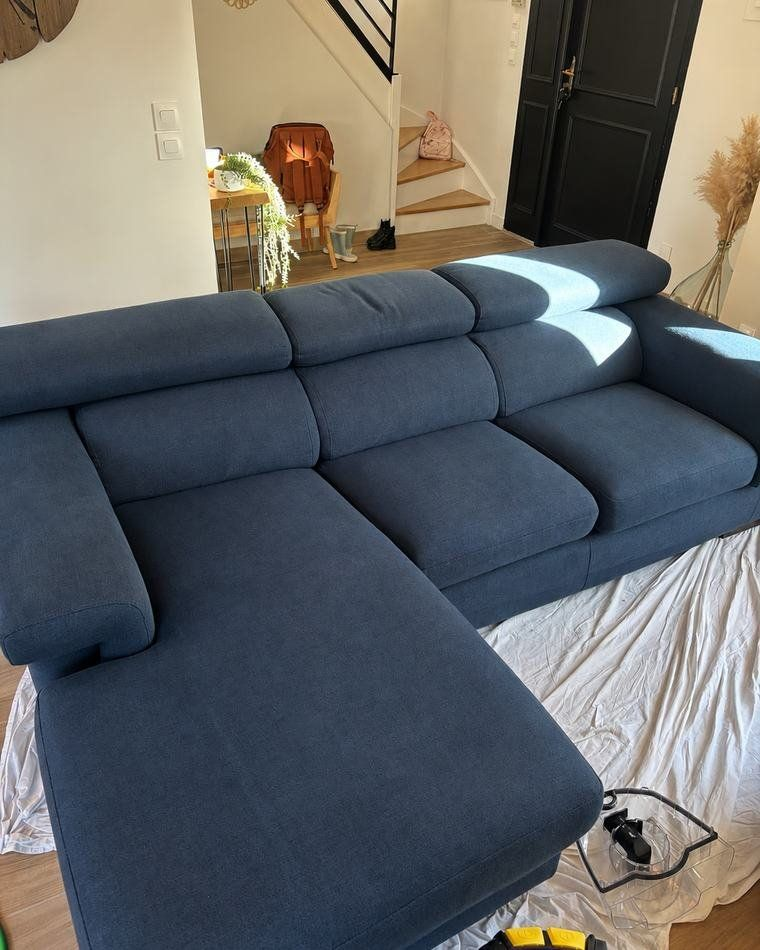
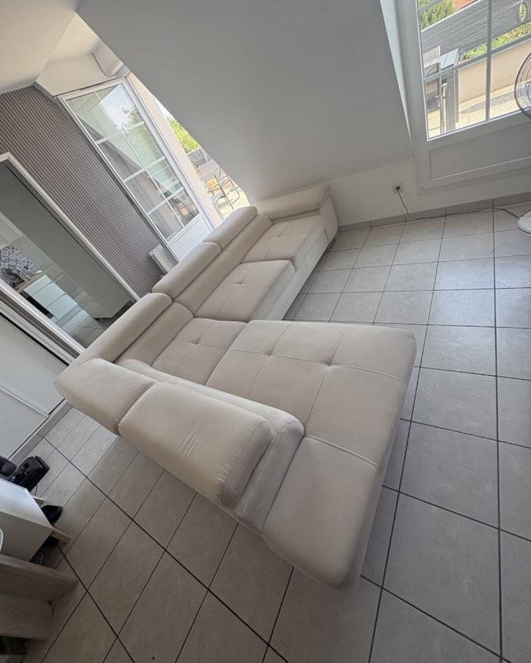
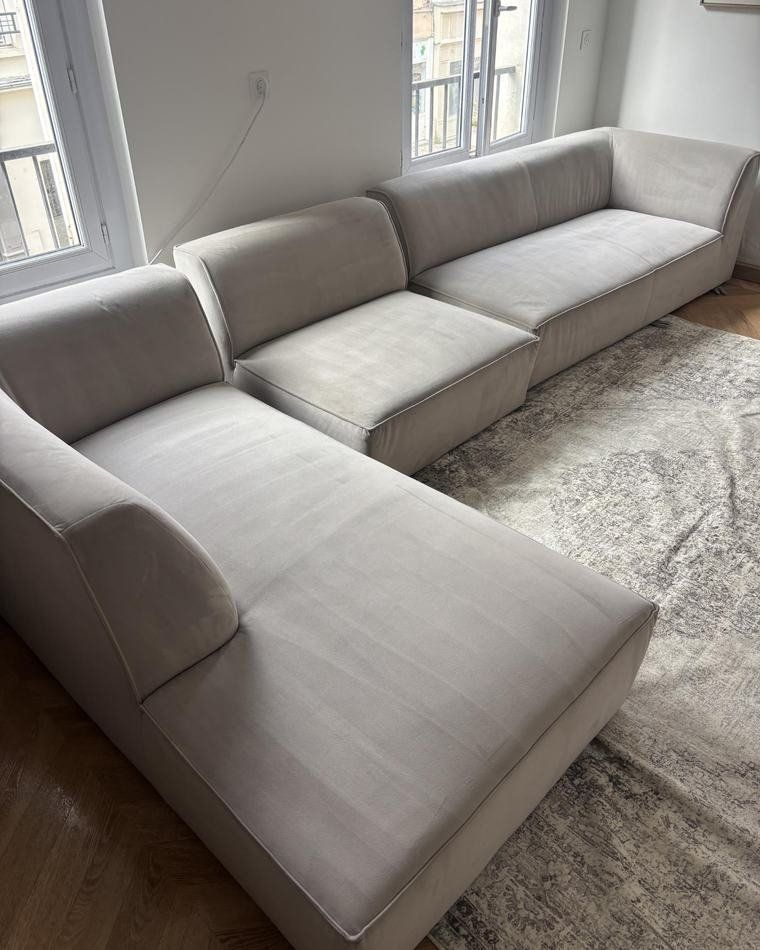

Nettoyage de canapé à domicile.
À partir de 80 € après crédit d'impôt. Injection-extraction professionnelle chez vous : les taches partent, les odeurs aussi, et le tissu retrouve sa teinte d'origine.
Notre approche
J'identifie la fibre et je teste la tenue des couleurs sur une zone cachée avant d'appliquer quoi que ce soit. Puis détachage ciblé, brossage mécanisé et injection-extraction : de l'eau claire est injectée sous pression et réaspirée aussitôt avec la saleté. Bâche de protection au sol, rien à déplacer, séchage en quelques heures.
Un canapé ne se salit pas qu'en surface.
Taches alimentaires
Café, vin, gras, chocolat, sauces : traitées une par une avec le détachant adapté.
Traces d'animaux
Poils incrustés, salive, petits accidents. Désinfection comprise à chaque passage.
Transpiration et urine
Les auréoles s'installent dans la mousse. L'extraction va les chercher en profondeur.
Odeurs
Tabac, humidité, renfermé. On ne masque pas avec un parfum : on retire ce qui sent.
En quatre étapes.
Diagnostic
J'identifie la fibre et je teste la tenue des couleurs sur une zone cachée.
Détachage
Détachants ciblés selon chaque tache, puis brossage mécanisé sur toute l'assise.
Temps d'action
Cinq minutes pour que le produit décolle la saleté incrustée dans la fibre.
Injection-extraction
Eau claire injectée sous pression puis réaspirée aussitôt, avec la saleté dissoute.
Un prix ferme, annoncé avant de commencer.
Après crédit d'impôt de 50 % : canapé 2 places dès 80 €, 3 places dès 90 €, canapé d'angle 5 places et plus dès 99 €. Le prix définitif dépend du tissu et de l'état : il vous est confirmé sur devis, avant toute intervention.
Après crédit d'impôt de 50 %. Déplacement compris dans le prix annoncé.
La différence se voit.





Les tissus que je traite.
Chaque tissu réagit différemment. C'est la raison du test de couleur avant toute chose.
Velours et velours côtelé
Les plus fréquents, et les plus spectaculaires une fois nettoyés. L'extraction redresse la fibre et la couleur revient. Séchage un peu plus long.
Microfibre et polyester
Les tissus les plus tolérants. Les taches partent bien, le séchage est rapide, le résultat est très fiable.
Lin et coton
Matières naturelles, sensibles au rétrécissement et aux auréoles. Je travaille à pression réduite et je sèche de façon homogène.
Chenille et tissus bouclés
La saleté se loge entre les boucles. Le brossage mécanisé est indispensable, l'aspiration seule ne suffit jamais.
Alcantara et suédine
Traitement délicat, produit spécifique, pression basse. Possible, mais je préviens toujours du résultat attendu avant de commencer.
Cuir et simili
Ces matières ne se nettoient pas par injection-extraction. Je ne les traite pas, et je vous le dis franchement plutôt que de prendre le risque.
Ce que je ne peux pas promettre.
Un nettoyage professionnel retire la saleté. Il ne refait pas un canapé neuf, et certains dégâts sont définitifs. Je préfère le dire avant le devis.
- Une décoloration causée par le soleil ou un produit ménager ne revient pas : la couleur est partie, il n'y a plus rien à retirer.
- Une tache d'encre, de teinture ou de javel modifie la fibre. Elle s'atténue parfois, elle ne disparaît pas.
- Un tissu usé jusqu'à la trame ressortira propre, mais toujours usé. Le nettoyage ne reconstitue pas une fibre.
- Une odeur qui revient signale presque toujours une mousse imprégnée. Un second passage est parfois nécessaire.
Je vous dis sur place ce qui partira et ce qui ne partira pas, avant de commencer. Vous décidez ensuite.
Où j'interviens
Je me déplace dans tout le Val-d'Oise, en Île-de-France et dans le sud de l'Oise. Le déplacement est compris dans le prix annoncé.
Taverny, Franconville, Ermont, Beauchamp, Saint-Leu-la-Forêt, Montmorency, Eaubonne, Domont, Sarcelles, Argenteuil, Cergy, Pontoise, Saint-Ouen-l'Aumône, L'Isle-Adam, Beaumont-sur-Oise, Persan, Chantilly et les communes alentour.
Nos autres prestations
Le même soin pour vos vitres et vos autres textiles, le même jour si vous le souhaitez.
Ce qu'on nous demande le plus
Combien de temps le canapé met-il à sécher ?
Entre 4 et 8 heures selon l'épaisseur de la mousse et l'aération de la pièce. Vous pouvez vous rasseoir dessus le soir même.
Faut-il déplacer le canapé ?
Non. Je travaille sur place, avec une bâche de protection au sol. Vous n'avez rien à préparer.
Et si les taches ne partent pas ?
Je vous le dis avant de commencer. Certaines taches anciennes ou décolorantes ne partent jamais totalement : je préfère vous prévenir plutôt que de vous vendre un miracle.
Traitez-vous les canapés en cuir ?
Non. Le cuir et le simili ne se nettoient pas par injection-extraction. Je vous oriente plutôt vers un spécialiste du cuir.
Comment fonctionne le crédit d'impôt ?
Vous réglez la facture, puis 50 % vous sont rendus par l'État au titre des services à la personne. Avec l'avance immédiate, la réduction est appliquée tout de suite : vous ne sortez que la moitié.
Votre canapé mérite mieux qu'un remplacement.
Envoyez une ou deux photos et les dimensions : Jensen vous répond sous 24 heures avec un prix ferme. Gratuit et sans engagement.
- Zone
- Val-d'Oise et toute l'Île-de-France, jusqu'au sud de l'Oise
- Disponibilité
- Joignable 7/7 · Interventions du lundi au samedi, créneaux en soirée possibles
- Téléphone
- 06 99 14 25 08